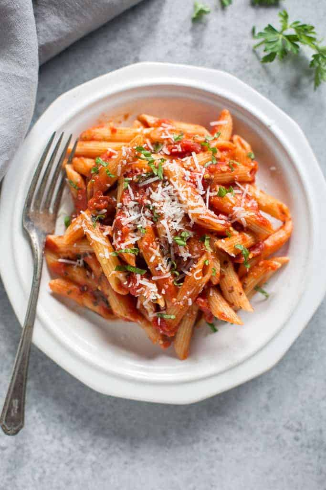

Home
Penne Arrabbiata Recipe
Credit: Tastes Better from Scratch

Description
A spicy red Italian dish made with penne pasta that is vegetarian friendly.
This is a quick dish that is made with fresh ingredients to really get the
flavor and aroma of the pasta. The type of pasta used may be modified to
spaghetti noodles, meat and vegetables may also be added. If you are worried
about the spice, it can be adjusted in the recipe to your preference.
Ingredients
- 1 pound penne rigate
- 3 tbsp olive oil
- 3 cloves garlic
-
1/4 tsp crushed reed pepper flakes, depending on
how spicy you want it
-
1 28oz can whole peeled tomatoes, or 1 1/2 cups freshly
choppes tomatoes
- 2 tbsp tomato paste
- 6 fresh basil leaves, choppped
- 1/2 cup freshly grated parmesan cheese for topping
- 1/3 cup fresh chopped parsley, finely chopped, for topping
Steps
-
Cook pasta in a large pot of boiling water, according to package instructions,
until tender.
-
Meanwhile, heat olive oil in a large skillet over medium heat. Add garlic and
crushed red pepper; cook, stirring for 30 seconds.
-
Add tomatoes, crushing them roughly with the back of a wooden spoon, and tomato
paste.
-
Bring to a simmer over low heat and cook for 5-10 minutes. Remove from heat and
add fresh chopped basil.
-
When pasta is cooked, drain the water and add it to the sauce. Toss well. Taste
and add more reed pepper flakes or salt and pepper, if needed.
-
Serve immediately topped wtih a generous portion of grated parmesan cheese and
fresh chopped parsley.